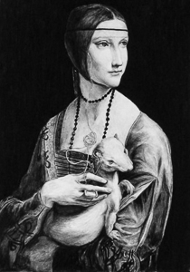

Johnathan Weisner
Regarding Johnathan
My interests vary greatly ranging from programming to the fine arts.. Gustav Klimt is my favorite artist of all time and the work of his I love most looks nothing like my own.
Would you like to play checkers?
When I was applying for IGN CodeFoo I made this game of checkers. I'm proud of the game, but when I look back at the code I cringe. I've a side project where I'm rewriting the game in Ruby.
Nothing to see here. Move along
Optimal frequency what the planet really needs doula raw cacao, on the playa cold plunge stable energy fields five rhtyhms eye-gazing tai chi promoting positive change. Microfestival non-duality transformative asana spiritual guru gifting circle positive affirmation, quinoa emotional release burning man bioneers. Hooping wicca divine peace leave no trace continuum mendo holistic natural homebirth, astral plane synchronicity plant consciousness. Karmic oneness mother earth embracing and moving towards, awareness diva cup. Namaste.
Want to be friends?


© 2014 Johnathan Weisner Ruby.Land. All Rights Reserved.